After an agonizing 5 days of waiting for my Nayu to return to my arms, the Fedex man dropped her off to me. My little twin arrived on September 11th?!?!
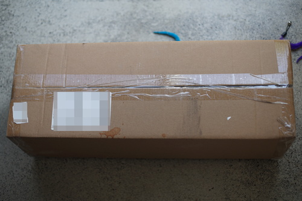
What did they spill on this box?! EWWWW
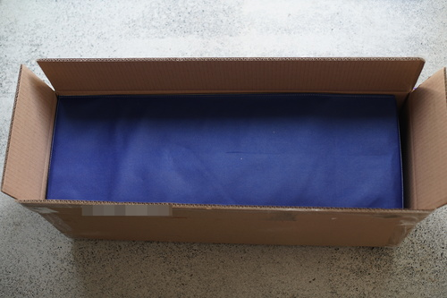
I boxcutted a little too hard... but I didn't slice through the bag.
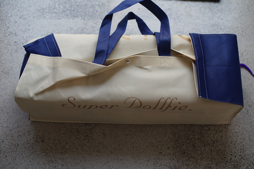
The cutest little house box
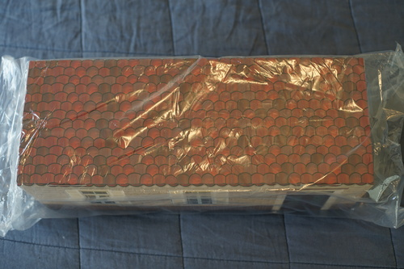
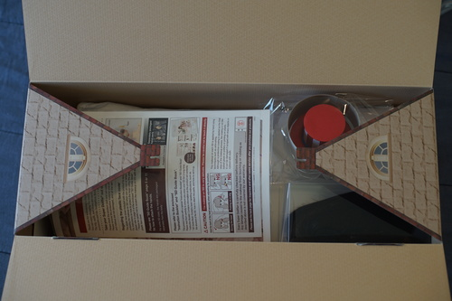
She smells like RESIN.
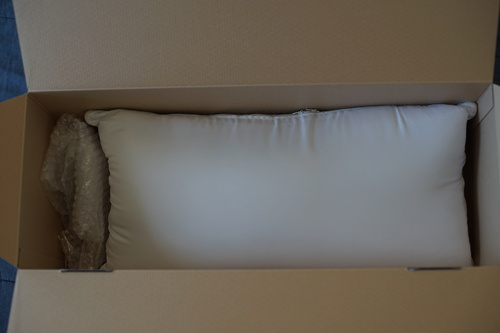
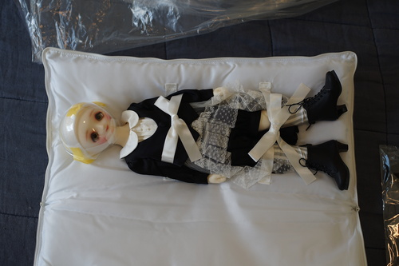
Surprise! She came fully dressed!
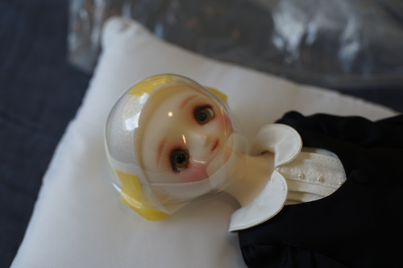
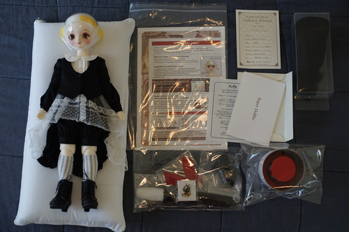
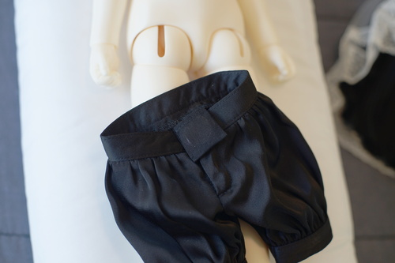
The shorts have a little pocket for a magnet to attach Komame's tail.
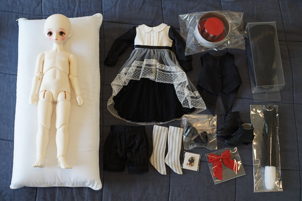
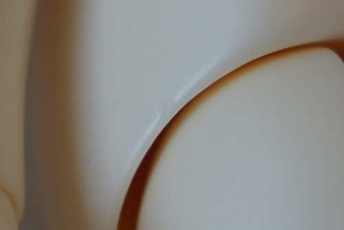
This body has a lot more sharp spots than I expected. The seams are a little sharp and there's a defect around her leg hole which is not a seam.
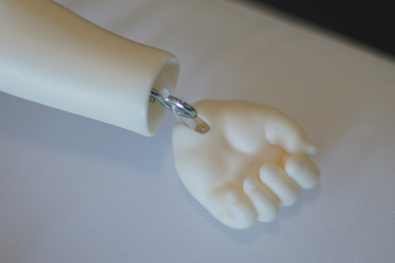
Both the hands and feet do not have separate wrist balls. The balls are combined with the hand and foot pieces. They both use strings to attatch to small S hooks inside the calves and forearms. The hands have one touch system, while the feet do not.
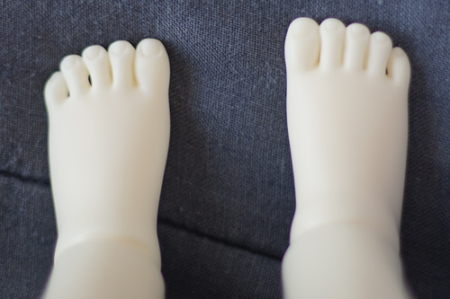
Her toes are not the same on both sides! Cute!!
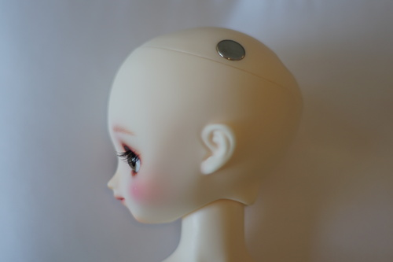
She has a DEAR SD headplate and integrated magnets in her headcap.
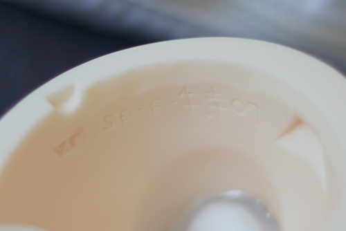
I was really curious what head number she would be! I didn't know if she'd have a named sculpt number or an FCS number. The inside of her head and headcap are marked SD-F-特07 (toku 07). The term used for the old F07 is 旧07 (kyuu F07). The inside of this head is modern unlike an oldskin head.
Although F-旧07 was in the original set of option heads, SD-F-特07 was released in 2013. She's available as an FCS option rarely as an event. I believe the last time was in Spring 2024.
Her headcap is small relative to the size of her head and her eyes are really deep in there. Can't wait to pull the hot glue out of this one...
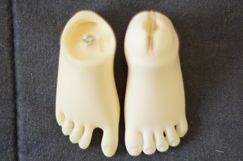
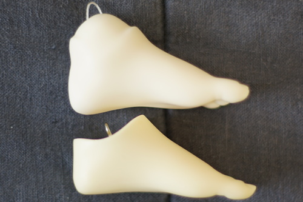
Her feet are effectively the same size as SD. The foot with the metal hook is SD, for those unfamiliar.
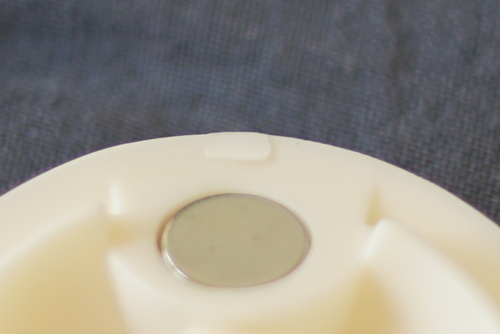
They really could have smoothed out this gate a little more.
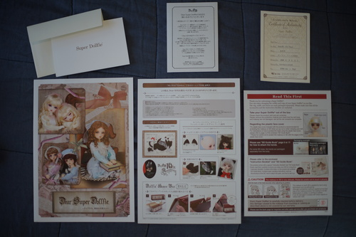
The full paperwork. No option parts order form was included, which sucks because I want all the hands!
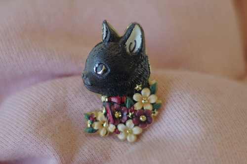
The komame pin is really cute! It's metal but the print isn't lined up on it well.
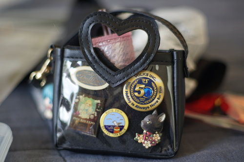
Straight into Hina's itabag.
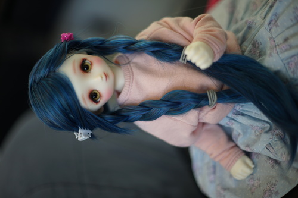
I have a severe lack of 9-10 wigs. I bought this for an entirely different purpose, but it does fit on her head. It's cute enough but I won't cut the bangs though because it's not hers to keep.
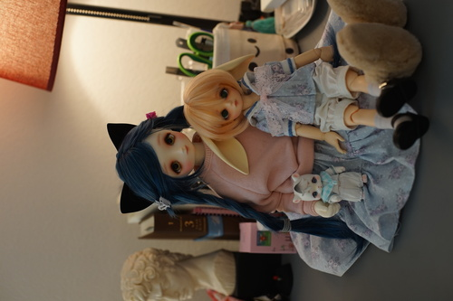
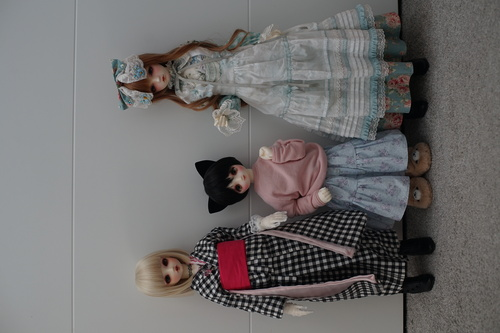
Height comparison with Hina and Solveig. She's wearing Hina's clothes. I bought this as a temporary wig for Santi and it's a 9-10. It looks cute on her! But now poor Santi...
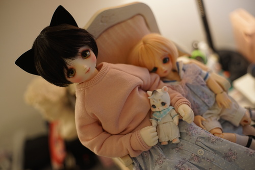
Some more notes on this somehow still exclusive 10 year old body (okay, Volks):
If you're curious about old Volks FCS, check out these pages on Ningyo Bingo and Aimee's old pages. It's so cool to see how this head design was originally sold. She looked so different!
My plans for her are to be a little bear girl, so please wait warmly and enjoy Hagi-chan as a cat girl~